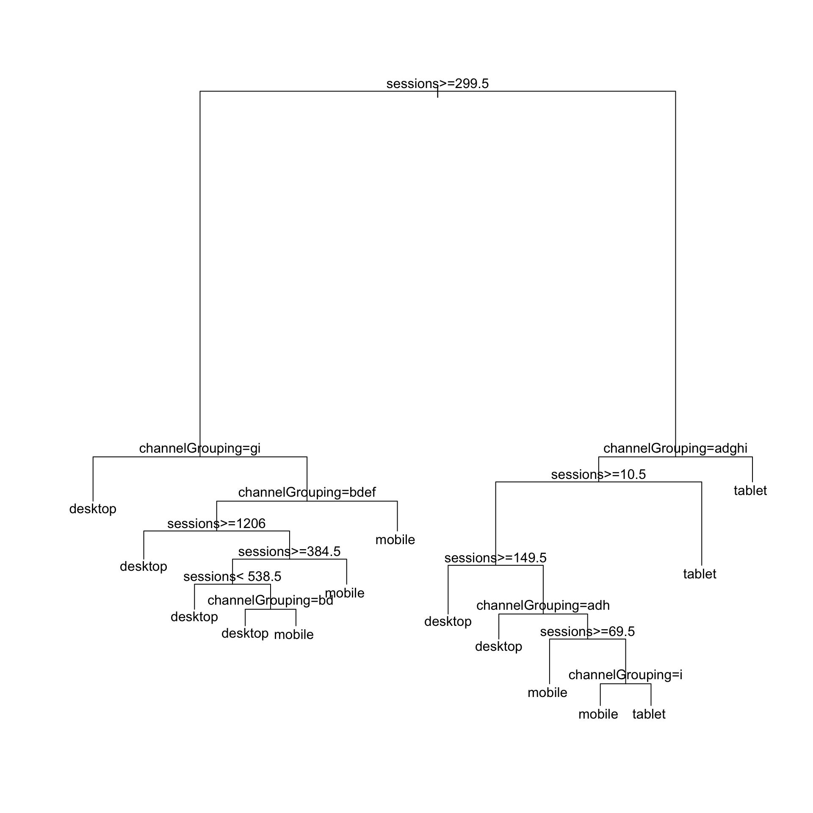
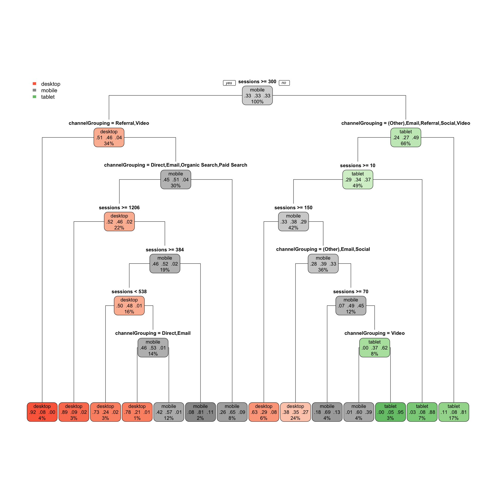

Categorisation is another useful application for web data you can perform in R.
In this case, we are looking to how we can classify web data to create different segments created by the data (as opposed to what you may pick), or if you give categories to R if they can help you define those categories via other metrics.
Decision trees are typically read top to bottom, and represent where the model thinks you can split your data. As you move down the tree, the model splits out the “best fit” branches.
This example requires having a web_data data frame. You can either load up some sample data by completing the I/O Exercise (which is what is shown in the details below), or, if you have access to a Google Analytics account, you can use your own data by following the steps on the Google Analytics API page.
Once you have a web_data data frame to work with, the command head(web_data should return a table that, at least structurally, looks something like this:
kable(head(web_data))| X | date | channelGrouping | deviceCategory | sessions | pageviews | entrances | bounces |
|---|---|---|---|---|---|---|---|
| 1 | 2016-01-01 | (Other) | desktop | 19 | 23 | 19 | 15 |
| 2 | 2016-01-01 | (Other) | mobile | 112 | 162 | 112 | 82 |
| 3 | 2016-01-01 | (Other) | tablet | 24 | 41 | 24 | 19 |
| 4 | 2016-01-01 | Direct | desktop | 133 | 423 | 133 | 61 |
| 5 | 2016-01-01 | Direct | mobile | 345 | 878 | 344 | 172 |
| 6 | 2016-01-01 | Direct | tablet | 126 | 237 | 126 | 77 |
We can then transform the data for categorization and store it in a new object called cats:
library(dplyr) # data transformation
cats <- web_data %>% select(deviceCategory, channelGrouping, sessions)
kable(head(cats), row.names = FALSE)| deviceCategory | channelGrouping | sessions |
|---|---|---|
| desktop | (Other) | 19 |
| mobile | (Other) | 112 |
| tablet | (Other) | 24 |
| desktop | Direct | 133 |
| mobile | Direct | 345 |
| tablet | Direct | 126 |
With that data set, we can quickly make a categorisation tree:
library(rpart) # creates decision trees
tree <- rpart(deviceCategory ~ ., cats)
plot(tree)
text(tree)
The labels are a bit obscure as they abbreviate the channel names.
The package rpart.plot makes the plots much nicer and easier to interpret:
library(rpart.plot) # pretty trees
rpart.plot(tree, type=1)
Each node shows:
From this you can see from this data at a glance that for sessions under 300, Tablet traffic was not search related at all, favouring Email, Referral, Social and Video.
Categorisation is a use case for machine learning, as it utilises self-validation checks to check your categorisatons. Two methods are talked about in more length in the blog post, “Introduction to Machine Learning with Web Analytics: Random Forests and K-Means”.